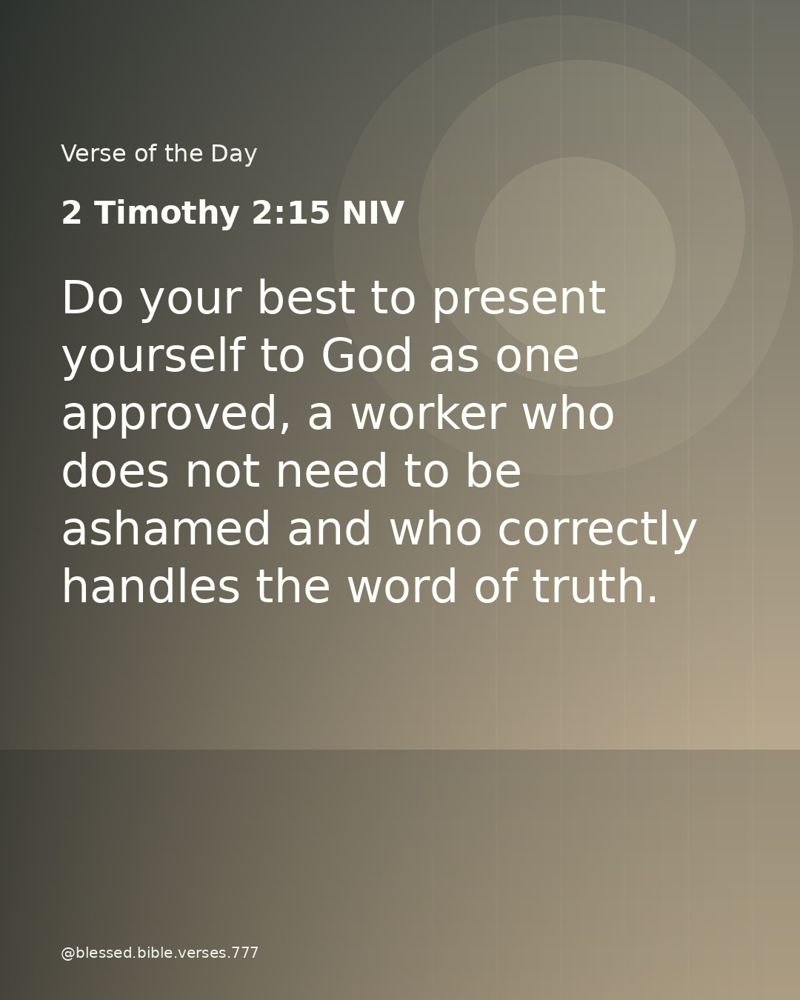
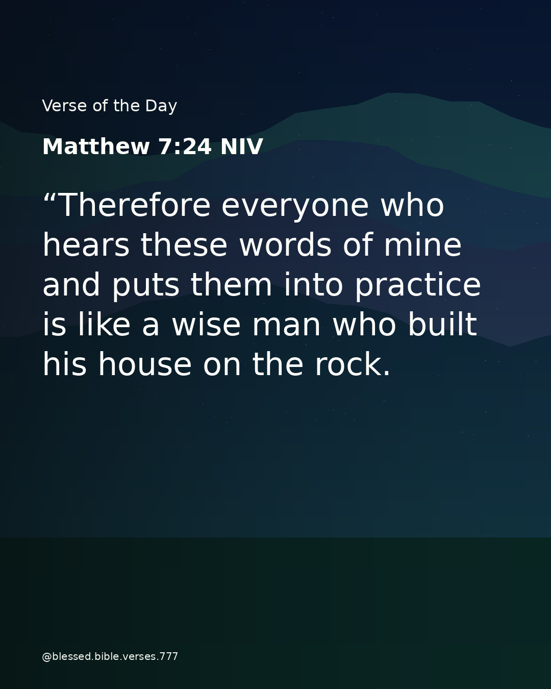
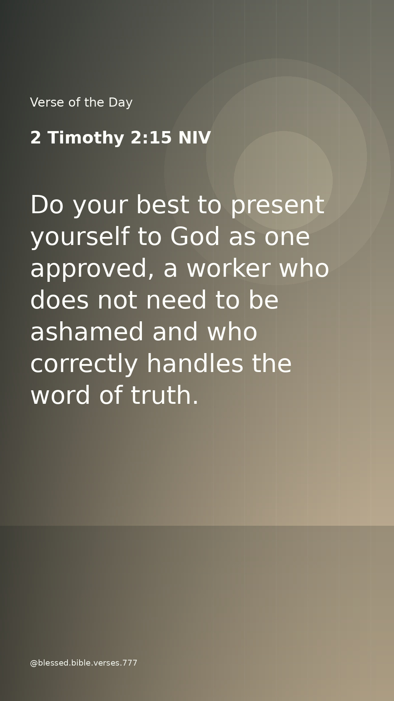
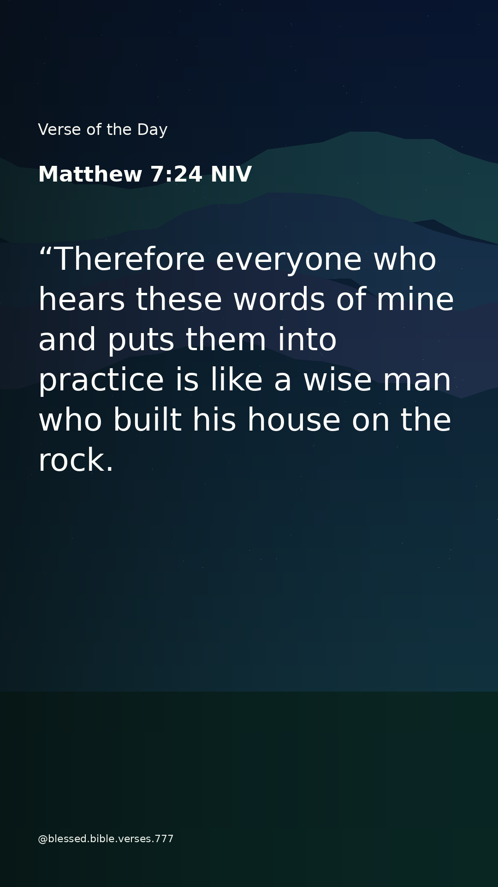

Let Your Light Shine.
A gentle public home for faith-inspired image posts and visual stories. Select a reflection and explore the original artwork.
Live in your browser · No account · No uploadsThe artwork, not just the description.
Browse these existing public images. Select any artwork to view its original file. Rights and reuse terms remain in the project README.








Explore the work
Guided experience